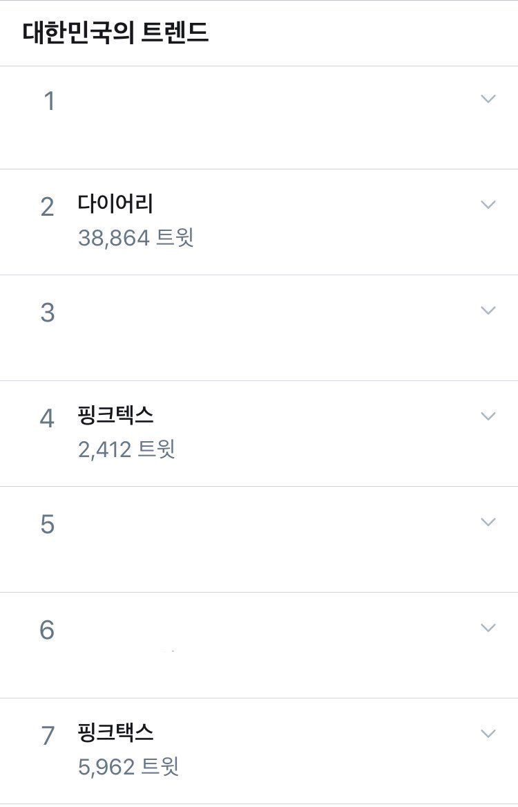

2020년 4월, 그리고 2021년 2월 일어났던 플로우. 트위터 4물결 페미니스트들과 트위터리안들 사이에 다이어리 꾸미기(일명 ‘다꾸’)가 코르셋과 핑크택스인지에 대한 논란이 불거졌다.
2020년 4월, 해당 플로우는 3만8천여 키워드로 대한민국 트위터 실시간 트렌드 2위, 4위, 7위에 오르며 큰 논란이 되었다.

4물결 페미니스트들은 ‘다꾸(다이어리 꾸미기를 줄여 부르는 신어)’라는 취미의 변화를 짚었다.
현재 ‘다꾸’ 문화는 단순한 일기쓰기라기보다 다양한 상품을 이용한 ‘꾸미기’에 초점이 이동된 소비지향적 취미에 가깝다. 특히 10대 여성 청소년의 또래문화에 큰 영향을 미치고 있다는 점애서, ‘다꾸’ 문화의 영향력은 단지 경제적으로 독립한 성인의 선택적 취미로 치부하기 어렵다.
더불어 4물결 페미니즘 담론에서 논의되는 코르셋은 여성에게 강요되는 여성성을 포괄하는데, 다양한 코르셋(여성성 강요) 중 대표적인 것은 글씨체에 요구되는 여성성이다. 대개 남성에게 기대되는 것과 달리 여성에게는 동글동글하고 보기에 좋은 여성스러운 필체가 요구된다. ‘다꾸’ 문화의 많은 결은 여성스러운 필체와도 함께하고 있다.
4물결 페미니스트들은 이러한 맥락을 짚으며, ‘다꾸’ 문화는 여성에게 강요되는 모든 여성성을 의미하는 넓은 의미의 코르셋에 해당된다고 이야기하였다.1
페미니스트들의 주장은 다이어리, 일기, 스케줄러가 아닌 핑크택스로 점철된 다이어리 ‘꾸미기’ 행위에 대한 것이었다.
하지만 이러한 주장을 다이어리로 싸잡아 해석하며 몇몇 뇌절이 이어졌다.
플로우가 불거졌던 25일 한 트위터리안은 안네의 일기 사진 두 장을 첨부하여 “어떤 다꾸는 귀중한 사료이자 인류의 유산으로 남았네”라고 트윗했다.
해당 트윗에는 “다이어리 꾸미기'를 왜 '다이어리'랑 동의어인 것처럼 쓰나? 안네의 다이어리는 안네의 다이어리 꾸미기가 아니다”2 등의 인용이 이어졌다.
같은 날 한 트위터리안은 이순신 장군의 난중일기를 언급하며 “저게 코르셋이면 난중일기는 코르셋 끝판왕임 전쟁 중에 다이어리나 쓰고 앉아있다”고 트윗했다.
해당 트윗에는 “이순신 장군이 꽃잎 하나하나 말려 붙이면서 난중일기 꾸미기하고 있었나. 다이어리 ‘꾸미기’에 회의적인 의견은 봤어도 ‘일기쓰기’를 비판하는 이는 없었다”3 등의 멘션이 이어졌다.
25일 평론가 듀나는 “복음서를 이렇게 꾸미는 게 교회에 무슨 도움이 되겠어요. 다 예쁜 게 좋아서 하는 거지”라고 트윗했다.
듀나의 트윗에는 “바티칸을 호화롭게 꾸미고 벽화도 비싼돈을 주고 그려댄 이유는 소비한 돈이 권위와 연결이 되어서 그렇습니다.”4, “수많은 종교 관련 예술은 신을 가시화시켜 교회의 권위를 높이는 데에 기여했죠. 예뻐서 좋아서 하는 거라 생각했다니 실망인걸요”5 등의 인용이 이어졌다.
20일 한 트위터리안은 “저는 논문 너무 읽기 싫으면 논문에다가 스티커랑 떡메붙여요 이것을 논꾸라고 합니다. 논꾸를 영업합니다. 논문 발제 해야하는데 안 읽힐 때 울지 말고 스티커를 붙여보세요. 여전히 안 읽히겠지만 기분은 좀 나아질겁니다.”고 트윗했다.